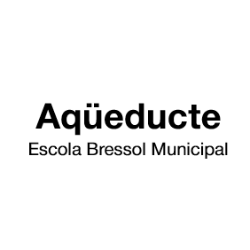
Mucha gente pequeña, en lugares pequeños, haciendo cosas pequeñas, puede cambiar el mundo.Eduardo Galeano
Desde Ubuntu creemos que el trabajo comunitario es fundamental: trabajamos de manera coordinada, tanto entre los diferentes proyectos de la asociación como con otras entidades, recursos y equipamientos del barrio y de la ciudad.
Trabajo en red
Entidades y equipamientos de la red
24 recursos del barrio y de la ciudad con los que trabajamos coordinadamente, tal como aparecen en la web original.
24 entidades
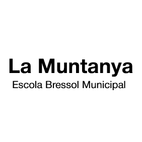
Escuelas
Escola Ferrer i Guàrdia
Centro educativo con el que trabajamos de manera coordinada.
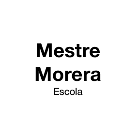
Escuelas
Escola Mestre Morera
Centro educativo con el que trabajamos de manera coordinada.
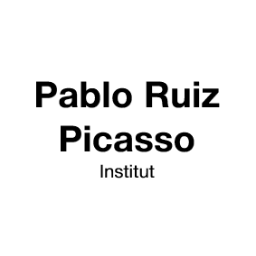
Escuelas
Institut Picasso
Centro educativo con el que trabajamos de manera coordinada.
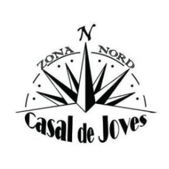
Cultura y ocio
Casal de Joves de Zona Nord
Equipamiento de cultura y ocio del territorio.
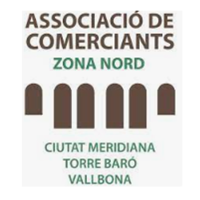
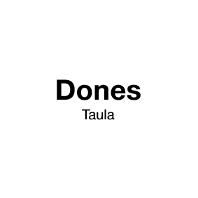
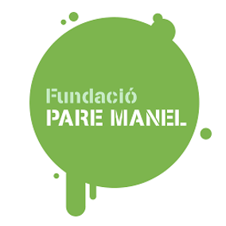
Entidades
Fundació Pare Manel
Entidad social con la que tejemos comunidad en el barrio.
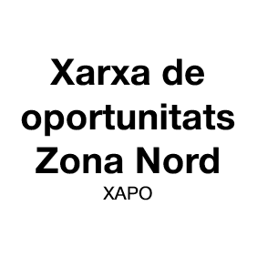
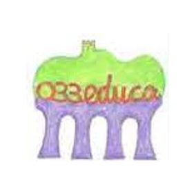
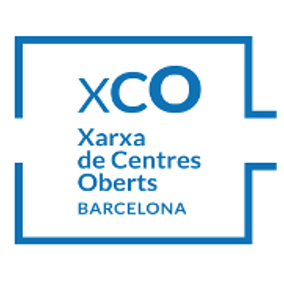
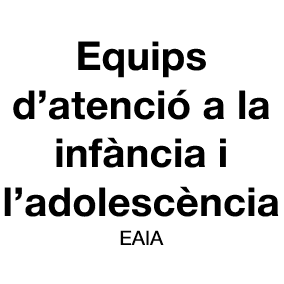
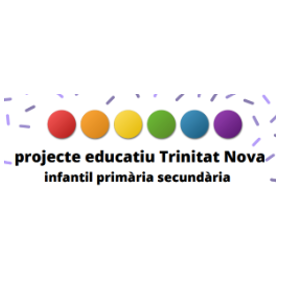
Escuelas
Institut Escola Trinitat Nova
Centro educativo con el que trabajamos de manera coordinada.
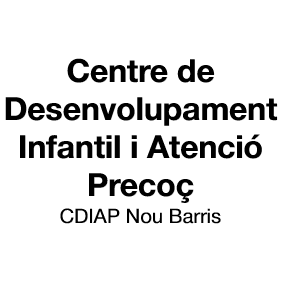
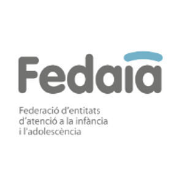
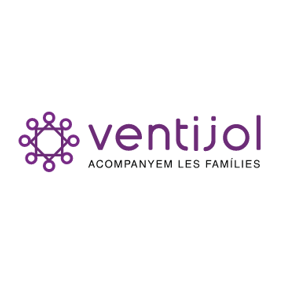
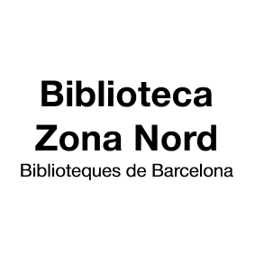
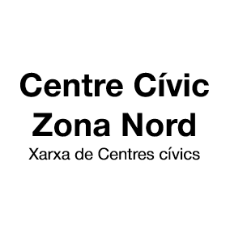
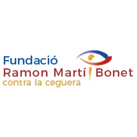
Entidades
Fundació Ramon Martí Bonet
Entidad social con la que tejemos comunidad en el barrio.
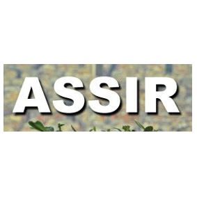
Escuelas
Educarts · Escola Ferrer i Guàrdia
Centro educativo con el que trabajamos de manera coordinada.
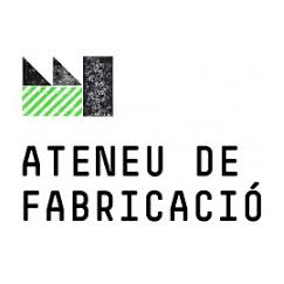
Cultura y ocio
Ateneu de Fabricació de Ciutat Meridiana
Equipamiento de cultura y ocio del territorio.
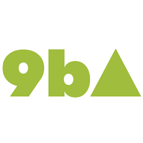